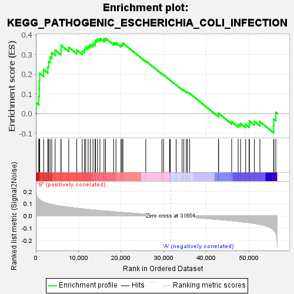
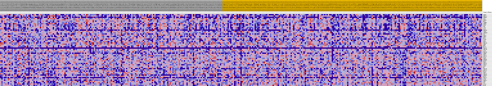
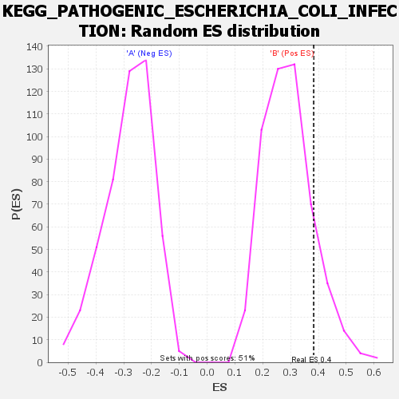

| | | Dataset | my.my.cls#B_versus_A.my.cls#B_versus_A_repos |
| Phenotype | my.cls#B_versus_A_repos |
| Upregulated in class | B |
| GeneSet | KEGG_PATHOGENIC_ESCHERICHIA_COLI_INFECTION |
| Enrichment Score (ES) | 0.3828371 |
| Normalized Enrichment Score (NES) | 1.3156662 |
| Nominal p-value | 0.13840155 |
| FDR q-value | 0.4835077 |
| FWER p-Value | 0.923 |
Table: GSEA Results Summary

Fig 1: Enrichment plot: KEGG_PATHOGENIC_ESCHERICHIA_COLI_INFECTION
Profile of the Running ES Score & Positions of GeneSet Members on the Rank Ordered List
| SYMBOL | TITLE | RANK IN GENE LIST | RANK METRIC SCORE | RUNNING ES | CORE ENRICHMENT | | 1 | TUBB3 | na | 70 | 0.186 | 0.0553 | Yes |
| 2 | TUBA1A | na | 679 | 0.139 | 0.0867 | Yes |
| 3 | TUBB4A | na | 808 | 0.135 | 0.1255 | Yes |
| 4 | ABL1 | na | 823 | 0.135 | 0.1661 | Yes |
| 5 | YWHAQ | na | 907 | 0.132 | 0.2048 | Yes |
| 6 | NCK1 | na | 1815 | 0.114 | 0.2234 | Yes |
| 7 | CTNNB1 | na | 2807 | 0.102 | 0.2370 | Yes |
| 8 | TUBB6 | na | 2990 | 0.101 | 0.2644 | Yes |
| 9 | TLR4 | na | 3337 | 0.098 | 0.2879 | Yes |
| 10 | FYN | na | 3721 | 0.094 | 0.3098 | Yes |
| 11 | LY96 | na | 4526 | 0.089 | 0.3226 | Yes |
| 12 | CD14 | na | 5885 | 0.080 | 0.3230 | Yes |
| 13 | TUBB2B | na | 5905 | 0.080 | 0.3471 | Yes |
| 14 | ITGB1 | na | 7715 | 0.071 | 0.3368 | Yes |
| 15 | ARHGEF2 | na | 9589 | 0.063 | 0.3230 | Yes |
| 16 | WAS | na | 10868 | 0.058 | 0.3181 | Yes |
| 17 | ARPC5 | na | 11409 | 0.056 | 0.3257 | Yes |
| 18 | TUBB1 | na | 11685 | 0.055 | 0.3377 | Yes |
| 19 | NCK2 | na | 12263 | 0.053 | 0.3437 | Yes |
| 20 | CLDN1 | na | 12768 | 0.052 | 0.3505 | Yes |
| 21 | TLR5 | na | 13405 | 0.049 | 0.3542 | Yes |
| 22 | PRKCA | na | 13897 | 0.047 | 0.3600 | Yes |
| 23 | TUBA1B | na | 13983 | 0.047 | 0.3728 | Yes |
| 24 | TUBB | na | 14451 | 0.046 | 0.3784 | Yes |
| 25 | RHOA | na | 15025 | 0.044 | 0.3816 | Yes |
| 26 | HCLS1 | na | 15984 | 0.041 | 0.3771 | Yes |
| 27 | TUBA3C | na | 16346 | 0.040 | 0.3828 | Yes |
| 28 | ARPC1B | na | 18243 | 0.034 | 0.3598 | No |
| 29 | ACTB | na | 18792 | 0.033 | 0.3601 | No |
| 30 | TUBA3D | na | 19959 | 0.030 | 0.3485 | No |
| 31 | TUBB8 | na | 20190 | 0.029 | 0.3533 | No |
| 32 | ARPC2 | na | 20426 | 0.028 | 0.3578 | No |
| 33 | ARPC5L | na | 25784 | 0.015 | 0.2675 | No |
| 34 | CDC42 | na | 29589 | 0.005 | 0.2017 | No |
| 35 | ARPC4 | na | 29968 | 0.004 | 0.1963 | No |
| 36 | TUBB4B | na | 31392 | 0.001 | 0.1713 | No |
| 37 | ROCK2 | na | 31515 | 0.000 | 0.1693 | No |
| 38 | ARPC3 | na | 32914 | -0.003 | 0.1455 | No |
| 39 | TUBA4A | na | 34313 | -0.007 | 0.1228 | No |
| 40 | TUBA8 | na | 34705 | -0.008 | 0.1181 | No |
| 41 | WASL | na | 35297 | -0.009 | 0.1104 | No |
| 42 | NCL | na | 35547 | -0.010 | 0.1089 | No |
| 43 | TUBA3E | na | 36080 | -0.011 | 0.1029 | No |
| 44 | ARPC1A | na | 42846 | -0.030 | -0.0078 | No |
| 45 | KRT18 | na | 42856 | -0.030 | 0.0011 | No |
| 46 | YWHAZ | na | 45924 | -0.039 | -0.0413 | No |
| 47 | TUBA1C | na | 47458 | -0.045 | -0.0548 | No |
| 48 | TUBB7P | na | 48020 | -0.047 | -0.0505 | No |
| 49 | ROCK1 | na | 49209 | -0.052 | -0.0558 | No |
| 50 | TUBAL3 | na | 50031 | -0.055 | -0.0534 | No |
| 51 | CTTN | na | 50089 | -0.056 | -0.0375 | No |
| 52 | TUBB2A | na | 51263 | -0.062 | -0.0395 | No |
| 53 | CDH1 | na | 52556 | -0.070 | -0.0411 | No |
| 54 | EZR | na | 55783 | -0.114 | -0.0634 | No |
| 55 | ACTG1 | na | 55844 | -0.116 | -0.0291 | No |
| 56 | OCLN | na | 56294 | -0.141 | 0.0058 | No |
Table: GSEA details [plain text format]

Fig 2: KEGG_PATHOGENIC_ESCHERICHIA_COLI_INFECTION
Blue-Pink O' Gram in the Space of the Analyzed GeneSet

Fig 3: KEGG_PATHOGENIC_ESCHERICHIA_COLI_INFECTION: Random ES distribution
Gene set null distribution of ES for KEGG_PATHOGENIC_ESCHERICHIA_COLI_INFECTION